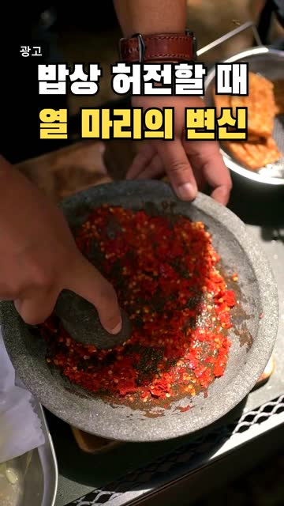
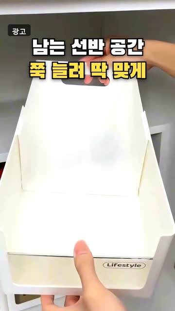
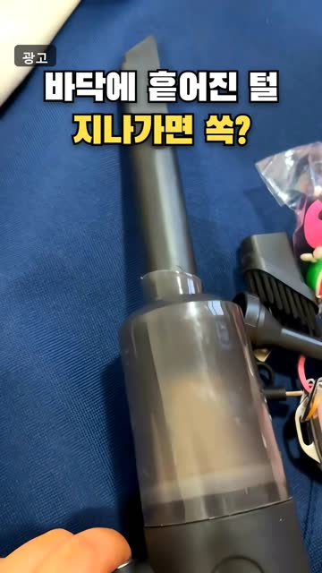
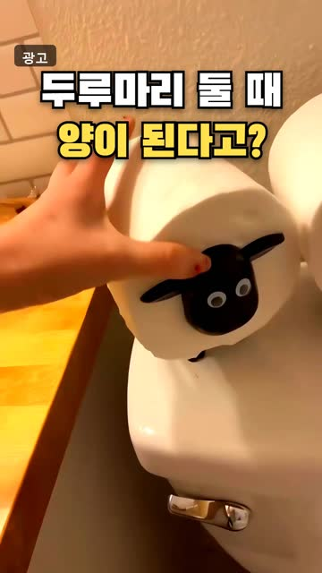
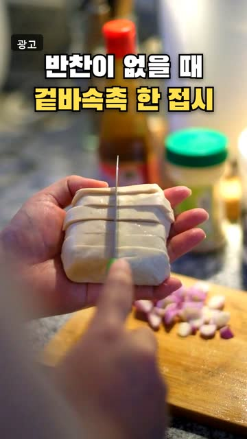
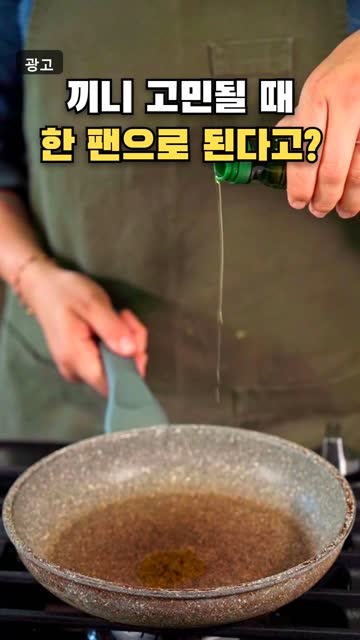
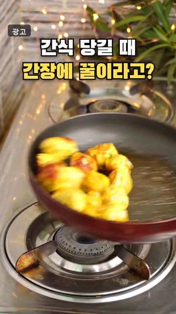
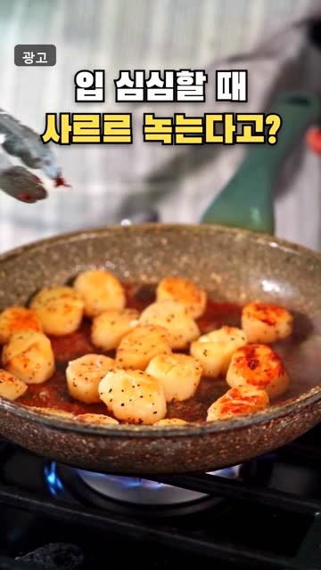
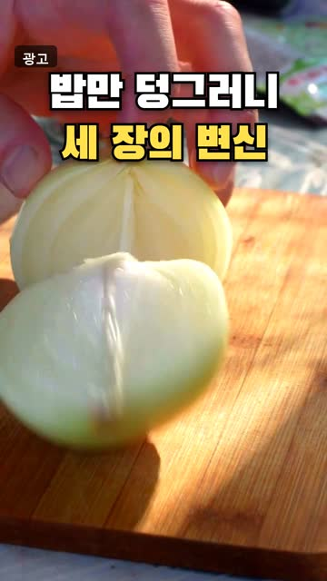

무브웍스 AI 허브
이 기능 미쳤다 싶은 AI 툴과, 써 보고 고른 살림 꿀템을 매일 올립니다.
💬 AI 툴 사용법이 궁금하면 영상에 아무 댓글이나 남기고 팔로우해 주세요. 사용법을 DM으로 보내 드려요.
최신 AI 툴 영상
쇼핑 꿀템 · 번호로 찾기
영상 속 번호를 쇼핑 링크 모음에서 누르면 상품으로 갑니다. 쿠팡 파트너스 활동으로 수수료를 받을 수 있습니다.

107번고추장 버터 새우구이 만들기 냉동 새우살

91번팬트리 빈틈 정리 팬트리 정리함
103번치즈 폭탄 김치 라면전 만들기 슈레드 치즈

77번머리카락 쏙 무선 청소기

105번휴지로 양 만들기 휴지 케이스

88번바삭 두부 강정 만들기 수제두부

100번새우 달걀볶음밥 만들기 냉동 새우살

108번간장 버터 떡구이 만들기 떡볶이 떡

122번바삭 가지튀김 만들기 타피오카 전분
111번매콤 참치 순두부짜글이 만들기 순두부

123번매콤 쫀득 어묵볶음 만들기 사각 어묵
125번매콤새콤 김치비빔국수 만들기 소면 국수
블로그 · 자세히 읽기
- 마나도 3박 5일 패키지, 토모혼·부나켄 호핑 일정
네이버 블로그 · 2026-10-29 - 다낭 3박 5일 패키지｜바나힐·호이안 야경 일정
네이버 블로그 · 2026-10-29 - 배드민턴 라켓 세베로 폰테80 구매 전 확인할 점
네이버 블로그 · 2026-10-28 - 오사카 4일 패키지, 히노데 3연박과 교토·나라
네이버 블로그 · 2026-10-28 - 과메기 늘보과메기 야채세트 구매 전 확인할 점
네이버 블로그 · 2026-10-27 - AHC 아이크림 시즌12 포페이스 구매 전 확인할 점 5가지
네이버 블로그 · 2026-10-27